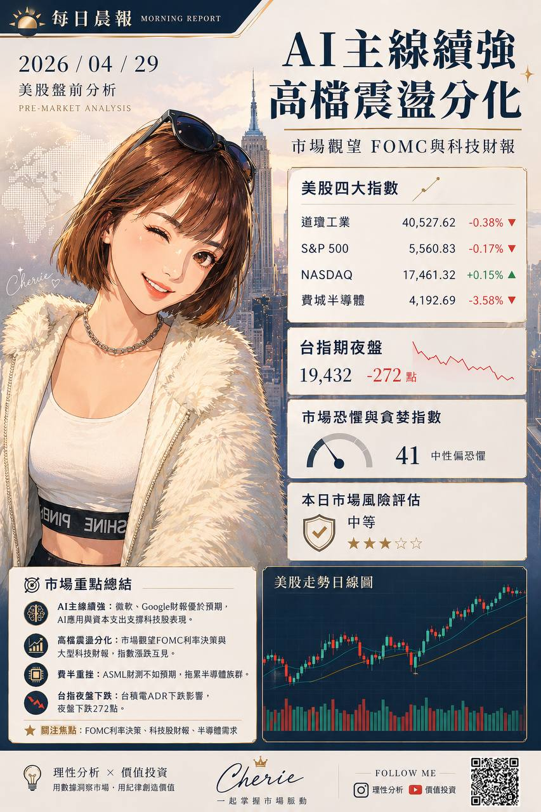

主線還是 AI，但市場已從全面樂觀切到高檔分化模式
昨晚關鍵不是單純漲跌，而是半導體明顯回檔、七巨頭走勢分化、外資期貨部位仍偏空，代表今天台股更要看結構，不是只看指數表面。

置頂先看 VIX、金價、油價，可以快速判斷今天市場風險偏好、避險情緒與通膨/能源背景。
📌 今日晨報總結
AI 主線沒變，但市場短線開始挑公司、挑財報、挑指引，不再是看到 AI 就全面買。
今天台股開盤重點要看，半導體是否被費半拖累，以及 AI 伺服器、散熱、光通訊能不能相對抗跌。
這種盤最怕用追價思維去碰高位股。
如果今天只是權值半導體弱，但 AI 供應鏈中的強勢次族群撐住，還是結構修正；若電子全面鬆動，風控要立刻拉高。
🧭 方舟運算 ETF 清單
🏭 產業個股價值區清單
其餘今日辨識到的價值區標的包含 2324 仁寶、3008 大立光、3045 台灣大、2313 華通、2455 全新、6239 力成、3653 健策、2327 國巨*、2379 瑞昱、2059 川湖、7769 鴻勁。
📰 新聞交叉驗證重點
- OpenAI 與 AWS 合作，直接強化 AI 伺服器、交換器、光通訊、散熱、PCB 類股的基本面敘事。
- 對應清單：廣達、智邦、奇鋐、台光電、貿聯-KY。
- 費半大跌 3.58%，半導體鏈短線先面臨評價壓力。
- 對應清單：00830、00941、00911、台積電、聯電、日月光投控、旺矽、聯發科、景碩、欣興。
- Nvidia 新 GPU、能源與電力題材仍在，代表 AI 基建與綠能並未失效，只是市場開始篩選。
- 對應清單：台達電、00920、旺矽、奇鋐、廣達、智邦。
1. 最新財經新聞重點
- 美股主線仍是 AI 資本支出、雲端算力與半導體估值重估。
- OpenAI 與 AWS 新合作消息持續發酵，代表 AI 算力競爭從單一雲端陣營，進一步擴大成多平台競爭。
- Amazon 推出 AI 桌面助手型產品，市場開始關注 AI 從模型競賽走向企業工作流落地。
- Nvidia 推出 12GB RTX 5070 Laptop GPU，高階記憶體、AI PC 與邊緣 AI 規格升級題材延續。
2. 川普動向
市場現在看川普，不是在看政治熱鬧，而是在看關稅、對中政策與科技出口限制會不會再升級。
如果後續再強化保護主義或供應鏈限制，短線會壓電子權值估值，但中期反而有利非中供應鏈、AI 伺服器與美系資本支出鏈。
3. 馬斯克消息
馬斯克與 OpenAI / Altman 訴訟持續，市場看到的是 AI 話語權、商業模式與控制權之爭。
這種事件雖不是直接財報數字，但會持續拉高市場對 AI 算力、生態系與基礎設施競爭的關注。Tesla 昨晚收 376.02，盤後 377.88，屬於偏弱後小幅止穩。
4. 美股七巨頭與 CEO 願景
- Apple / Tim Cook：裝置生態、服務收入、裝置端 AI，收 270.71，盤後 269.50。
- Microsoft / Satya Nadella：Copilot、Azure、企業 AI 變現，收 429.25，盤後 428.00。
- Nvidia / Jensen Huang：算力、資料中心、主權 AI，收 213.17，盤後 212.62。
- Amazon / Andy Jassy：AWS、AI 代理工具、企業工作流，收 259.70，盤後 259.67。
- Alphabet / Sundar Pichai：搜尋、雲端、Gemini 商業化，收 349.78，盤後 350.17。
- Meta / Mark Zuckerberg：開源 AI、生態擴張、廣告效率，收 671.34，盤後 671.77。
- Tesla / Elon Musk：自駕、Robotaxi、Optimus，收 376.02，盤後 377.88。
七巨頭共同目標沒變，還是在搶 AI 基礎設施、模型能力、裝置入口與企業客戶。
但市場已從單純買夢，轉成檢查這些願景能不能真的轉成訂單、毛利與資本支出效率。
5. 前一晚美股行情解析
三大指數高檔震盪
S&P、Nasdaq、Dow 仍在高位附近整理，但盤中波動加大，顯示追價意願沒前幾天那麼一致。
費半大跌 3.58%
費半收 10,035.58，跌 372.46，這是昨晚最值得重視的風向，代表半導體與 AI 晶片鏈短線出現明顯獲利了結。
蘋果、微軟偏強，輝達、Meta、Tesla 偏弱
這不是全面轉空，而是科技主線內部開始分化，資金在高位換股與降風險。
6. 台指夜盤走勢解析
台指近月夜盤收 39,461，跌 272 點，跌幅 0.68%。
- 夜盤高點 39,854，低點 39,182，表示盤中賣壓不輕，不是單純小跌而已。
- 外資 4/28 台股期貨未平倉淨空單仍偏大，為 -45,869 口。
- 這代表今天台股如果開低，先看有沒有權值止穩與跌深收斂，不然短線情緒會偏保守。
7. 影響因素拆解
AI 供應鏈競爭升級
OpenAI 與 AWS 合作，利多雲端、伺服器、交換器、光通訊、散熱，但市場開始挑真正有訂單與毛利的公司。
半導體估值壓力
費半大跌會先壓台積電、IC 設計、CoWoS、ABF、先進封裝鏈的早盤情緒。
財報與展望敏感期
Microsoft、Amazon、Alphabet、Meta 等後續財報與指引，會直接牽動台股 AI 伺服器鏈評價。
8. 系統性風險判斷
目前判定：中
不是流動性危機，也不是信用風暴，但高檔估值、半導體回檔、政策不確定性與外資期貨偏空，代表短線波動風險正在升高。
9. 一句話市場主線結論
主線仍是 AI，但市場已從全面樂觀切換成「高檔分化、先看財報與指引」模式。
A. 美股收盤後的盤後重點分析
- 七巨頭盤後沒有一致轉強，整體偏觀望整理。
- Apple、Microsoft 盤後小跌，代表大型權值雖能撐盤，但追價力道有限。
- Alphabet、Meta、Tesla 盤後小幅回穩，說明成長股情緒沒有全面崩，但也沒回到強攻。
- Nvidia 盤後續弱，搭配費半重挫，今天台股半導體鏈開盤情緒要特別小心。
盤後真正的重點不是漲跌數字，而是市場正在等下一批法說與資本支出指引來定價。
也就是說，短線很容易變成「有題材沒追價，有財報才給評價」的盤。
B. 台股開盤前，美股影響到的台灣產業新聞重點
- OpenAI 擴大 AWS 合作 → AI 伺服器、交換器、光通訊、散熱、PCB
可留意：廣達、緯創、技嘉、英業達、鴻海、奇鋐、雙鴻、金像電、台光電、智邦、貿聯-KY - 費半重挫、Nvidia 轉弱 → 半導體、先進封裝、CoWoS、ABF、IC 設計
可留意：台積電、日月光投控、欣興、南電、景碩、世芯-KY、創意、力旺 - Amazon 推企業 AI 工具 → 雲端伺服器、資料中心電源與散熱
可留意：廣達、緯穎、台達電、光寶科、奇鋐、雙鴻
- Nvidia 新 GPU 與高階記憶體需求 → AI PC、記憶體、板卡、電競筆電、散熱
可留意：華碩、微星、技嘉、群聯、威剛、南亞科 - 馬斯克 / OpenAI 訴訟與 AI 話語權競爭升溫 → AI 伺服器、資料中心、電源、光模組
可留意：中磊、智邦、聯亞、上詮、華星光、台達電
今天若半導體壓盤，但伺服器、散熱、光通訊抗跌，代表資金沒有撤出 AI，只是在主線內部換位置。